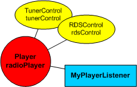
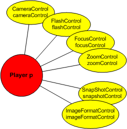

|
|||||||||
| PREV NEXT | FRAMES NO FRAMES | ||||||||
See:
Description
| Packages | |
|---|---|
| javax.microedition.amms | This package introduces four new concepts: GlobalManager, Spectator, Module and MediaProcessor. |
| javax.microedition.amms.control | This package contains Controls for setting formats, for defining the effect processing network structure and for setting the audio panning. |
| javax.microedition.amms.control.audio3d | This package contains Controls for various 3D audio settings. |
| javax.microedition.amms.control.audioeffect | This package contains EffectControls for audio and related assisting Controls. |
| javax.microedition.amms.control.camera | This package contains Controls for various camera settings. |
| javax.microedition.amms.control.imageeffect | This package contains EffectControls for video and for still images. |
| javax.microedition.amms.control.tuner | This package contains Controls for various tuner settings. |
This document defines JSR-234, Advanced Multimedia Supplements API, version 1.1.1.
Author: JSR-234 Expert Group (e-mail: jsr-234-comments@jcp.org)
Version: 1.1.1
Status: Maintenance Release
Released: 2010-12-28
Copyright © 2004-2010 Nokia. All Rights Reserved.
|
Date
|
Version
|
|---|---|
|
15-April-2004
|
Early Draft Review
|
|
16-July-2004
|
Public Review
|
|
28-September-2004
|
Proposed Final Draft
|
|
18-March-2005
|
Final Draft |
|
17-May-2005
|
Version 1.0: Final Release |
|
28-February-2007
|
Version 1.1: Maintenance Release |
|
28-December-2010
|
Version 1.1.1: Maintenance Release |
NOKIA CORPORATION IS WILLING TO LICENSE THIS SPECIFICATION TO YOU ONLY UPON THE TERMS CONTAINED IN THIS LICENSE ("LICENSE"). PLEASE READ THE TERMS AND CONDITIONS OF THIS LICENSE CAREFULLY. BY ACCESSING OR USING THE SPECIFICATION YOU WILL BE BOUND BY THE TERMS OF THIS LICENSE.
JSR-234 Advanced Multimedia Supplements API Specification ("Specification")
Specification Lead: Nokia Corporation ("Specification Lead")
Version: 1.0
Status: Final Release
Release: 2005-05-17 (including maintenance releases, if any, by the Specification Lead)
1. NOTICE; LIMITED LICENSE GRANTS
1.1 The Specification Lead hereby grants You a non-exclusive, non-transferable, worldwide, royalty-free, fully paid-up, limited license (without the right to sublicense) solely under intellectual property rights licensable by the Specification Lead to analyze and to use the Specification for research, evaluation, optimization and development purposes. In addition You may make a reasonable number of verbatim copies of this Specification in its entirety for Your private or internal use, as applicable, in accordance with the terms and conditions of this License.
1.2 No rights are granted under this License for internal deployment, the creation and/or distribution of implementations of the Specification for direct or indirect (including strategic) gain or advantage, the modification of the Specification (other than to the extent of Your fair use rights) or the distribution of the Specification or making the Specification available for 3rd parties.
1.3 Except as expressly set forth in this license, You acquire no right, title or interest in or to Specification or any other intellectual property licensable by the Specification Lead and no other rights are granted by implication, estoppel or otherwise. The Specification may only be used in accordance with the license terms set forth herein. This License will terminate immediately without notice from Specification Lead if You fail to comply with any provision of this License.
2. TRADEMARKS
2.1 Nokia is a registered trademark of Nokia Corporation. Nokia Corporation's product names are either trademarks or registered trademarks of Nokia Corporation. Your access to this Specification should not be construed as granting, by implication, estoppel or otherwise, any license or right to use any marks appearing in the Specification without the prior written consent of Nokia Corporation or Nokia's licensors. No right, title, or interest in or to any trademarks, service marks, or trade names of any third parties, is granted hereunder.
2.2 You shall not be allowed to remove any of the copyright statements or disclaimers or other proprietary notices contained in the Specification and You are obliged to include the copyright statement and the disclaimers, if any, in any copies of the Specification You make.
3. DISCLAIMER OF WARRANTIES
3.1 SUBJECT TO ANY STATUTORY WARRANTIES OR CONDITIONS WHICH CAN NOT BE EXCLUDED, THE SPECIFICATION IS PROVIDED "AS IS" WITHOUT WARRANTY OR CONDITION OF ANY KIND EITHER EXPRESS, IMPLIED, OR STATUTORY, INCLUDING, BUT NOT LIMITED TO, ANY IMPLIED WARRANTIES OR CONDITIONS OF MERCHANTABILITY, FITNESS FOR A PARTICULAR PURPOSE AND NON-INFRINGEMENT. ALL WARRANTIES AND CONDITIONS, EXPRESS, IMPLIED, AND STATUTORY ARE HEREBY DISCLAIMED. THE ENTIRE RISK ARISING OUT OF OR RELATING TO THE USE OR PERFORMANCE OF THE SPECIFICATION REMAINS WITH YOU.
3.2 THE SPECIFICATION MAY INCLUDE TECHNICAL INACCURACIES OR TYPOGRAPHICAL ERRORS. CHANGES ARE PERIODICALLY ADDED TO THE INFORMATION THEREIN; THESE CHANGES WILL BE INCORPORATED INTO NEW VERSIONS OF THE SPECIFICATION, IF ANY. SPECIFICATION LEAD MAY MAKE IMPROVEMENTS AND/OR CHANGES TO THE PRODUCT(S) AND/OR THE PROGRAM(S) DESCRIBED IN THE SPECIFICATION AT ANY TIME. Any use of such changes in the Specification will be governed by the then-current license for the applicable version of the Specification.
4. LIMITATION OF LIABILITY
4.1 TO THE FULLEST EXTENT PERMITTED BY LAW, IN NO EVENT WILL THE SPECIFICATION LEAD OR ITS SUPPLIERS BE LIABLE FOR ANY LOST PROFITS, LOST SAVINGS, LOST REVENUE, LOST DATA, PROCUREMENT OF SUBSTITUE GOODS, OR FOR ANY DIRECT, INDIRECT, INCIDENTIAL, SPECIAL, PUNITIVE, OR CONSEQUENTIAL DAMAGES, EVEN IF THE SPECIFICATION LEAD OR ITS SUPPLIERS HAVE BEEN ADVISED OF THE POSSIBILITY OF SUCH LOSSES OR DAMAGES. IN ADDITION THE SPECIFICATION LEAD AND ITS SUPPLIERS WILL NOT BE LIABLE FOR ANY DAMAGES CLAIMED BY YOU BASED ON ANY THIRD PARTY CLAIM.
4.2 Some jurisdictions do not allow the exclusion of implied warranties, or the limitation for consequential damages, so Section 4.1 may not apply to You in whole, but in such case Section 4.1 will apply to You to the maximum extent permitted by applicable law.
5. EXPORT CONTROL
5.1 You shall follow all export control laws and regulations relating to Specification.
6. RESTRICTED RIGHTS LEGEND
6.1 Note to U.S. Government Users. The Specification is a "Commercial Items", as that term is defined at 48 C.F.R. 2. 101, consisting of "Commercial Computer Software" and "Commercial Computer Software Documentation", as such terms are used in 48 C.F.R. 12.212 or 48 C.F.R. 227.7202, as applicable. Consistent with 48 C.F.R. 12.212 or 48 C.F.R. 227.7202-1 through 227.7202-4, as applicable, the Commercial Computer Software Documentation are being licensed to U.S. Government end users a) only as Commercial Items and b) with only those rights as are granted to all other end users pursuant to the terms and conditions herein. Unpublished-rights reserved under the copyright laws of the United States.
This specification was produced by the JSR-234 Expert Group in the Java Community Process (JCP). For more information, visit the JSR-234 web page.
The Advanced Multimedia Supplements API (JSR-234) Expert Group consisted of the following companies and individuals:Nokia Corporation (Specification Lead)
Aplix Corporation
Beatnik, Inc.
Beijing ZRRT Communications Technology Co. Ltd.
Cap Gemini
Creative Labs, Inc.
Ericsson AB
Esmertec AG
FueTrek Co., Ltd.
HI Corporation
iaSolution Inc.
IBM
Jarrett, Steve
Motorola
Samsung Electronics Corporation
Sharp Corporation
Sonaptic Ltd.
Sony Ericsson Mobile Communications AB
Sun Microsystems, Inc.
Symbian Ltd.
Vodafone Group Services Ltd.
Robert Alcock, Sonaptic Ltd.The following company representatives contributed to the version 1.1 specification:
David Ashbrook, Vodafone Group Services Ltd.
Hana Bisada, Symbian Ltd.
Mark Callow, HI Corporation
William Charnell, Esmertec AG
Harald Gustafsson, Ericsson AB
Daniel Haley, Cap Gemini Ernst & Young
Erlendur Karlsson, Ericsson AB
Yuval Noimark, IBM
Matti Paavola, Nokia Corporation (Editor)
Jonathan Page, Sonaptic Ltd.
Annika Pålsson, Ericsson AB
Antti Rantalahti, Nokia Corporation (Spec Lead)
Antti Saarinen, Nokia Corporation
Mats Tedenvall, Sony Ericsson Mobile Communications AB
Jean-Michel Trivi, Creative Labs, Inc.
Jeff Vigil, Sharp Corporation
Ivan Wong, Motorola
Amith Yamasani, Sun Microsystems, Inc.
Robert Alcock, Sonaptic Ltd.
Harald Gustafsson, Ericsson AB
David Karlsson, Ericsson AB
Erlendur Karlsson, Ericsson AB
Matti Paavola, Nokia Corporation (Spec Lead, Editor)
Jonathan Page, Sonaptic Ltd.
Antti Rantalahti, Nokia Corporation
Controls (in
javax.microedition.amms.control and subpackages). Besides
new Controls, several new extensions have also been added to the MMAPI framework (in javax.microedition.amms).
This section provides a high-level overview of different parts of the API. Short code examples in the Usage Scenarios section illustrate practical use of the API.
The Advanced audio features of the Advanced Multimedia Supplements (AMMS) give the application programmer tools for creating effects such as 3D audio localization, reverb, and equalizer (EQ).
Advanced audio features are covered by the controls in javax.microedition.amms.control.audio3d
and javax.microedition.amms.control.audioeffect packages and Spectator,
EffectModule, SoundSource3D and GlobalManager in
javax.microedition.amms package.
The following table lists which objects typically support which audio
Controls (if they are available);
3D marks that the case is mandatory in
3D Audio Capability,
M marks that the case is mandatory in
Music Capability, and
X marks optional cases:
| Global- Manager | Effect- Module | Sound- Source3D | Player | MIDIChannel- Control | Spectator | Media- Processor |
|
|---|---|---|---|---|---|---|---|
javax.microedition.amms.control: |
|||||||
| AudioFormatControl | X |
X |
|||||
| ContainerFormatControl | X |
X |
|||||
| EffectOrderControl | X | X |
X | X |
X |
||
| MidiChannelControl | X |
||||||
| PanControl | X | X |
X | X |
X |
||
| PriorityControl | X |
||||||
javax.microedition.amms.control.audio3d: |
|||||||
| CommitControl | X |
||||||
| DirectivityControl | X |
||||||
| DistanceAttenuationControl | 3D |
||||||
| DopplerControl | X |
X |
|||||
| LocationControl | 3D |
3D |
|||||
| MacroscopicControl | X |
||||||
| ObstructionControl | X |
||||||
| OrientationControl | 3D |
||||||
javax.microedition.amms.control.audioeffect: |
|||||||
| AudioVirtualizerControl | X |
X |
X |
||||
| ChorusControl | X |
X |
X |
X |
X |
||
| EqualizerControl |
M |
X |
X |
X |
X |
||
| ReverbControl | 3D |
X |
|||||
| ReverbSourceControl | X |
X |
|||||
Camera and video features are covered by the Controls
in javax.microedition.amms.control.camera
and javax.microedition.amms.control.imageeffect
packages.
The API provides interfaces for using tuner features such as audio radio playback and access for Radio Data System (RDS) features.
TunerControl is the main class for controlling a tuner. It is used to control, for instance, the frequency and modulation used. The channel presets of the device are also accessed via TunerControl.
The tuner features are covered by the Controls in javax.microedition.amms.control.tuner package.
The means of specifying effects and their order is here loosely called the Effects Framework. The framework allows
PlayersPlayer or a group of themThe central parts of this mechanism are
the EffectModule and SoundSource3D modules. The key difference
between the two is that the EffectModule is meant for effects in general and
the SoundSource3D is meant for representing a sound source in virtual acoustics.
3D audio Controls
can only be fetched from a SoundSource3D. The primary reason to differentiate
3D processing from the rest of the effects and to not, for example, inherit
the SoundSource3D from the EffectModule is that allowing 3D audio
processing on any Module would increase the complexity of the practical implementations
of effects network.
EffectModules and SoundSource3Ds are created by
the GlobalManager.
The MediaProcessor takes care of the post-processing
of media. It is not a Player, but merely lets the
application specify a source media and several post-processing
effects to be applied to it.
This way, we can
also reuse the effects framework for post-processing and yet
avoid the conceptual inelegance of "playing", for example, still
images through a Player.
The media post-processing using a MediaProcessor
does not follow the media time, but is instead usually faster.
The media post-processing features are covered by the following interfaces:
MediaProcessorFormatControl and its subinterfacesFormatControlContainerFormatControlAudioFormatControlImageFormatControlVideoFormatControlPriorityControl
Media capabilities specify the minimum functionality for a certain functional feature. Media capabilities
can be queried by the application by System property supports.mediacapabilities.
Any legal JSR-234 implementation MUST support at least one media capability.
EqualizerControl MUST be supported for the
GlobalManager.SCOPE_LIVE_ONLY and
SCOPE_LIVE_AND_RECORD must be supported for this
EqualizerControl.VolumeControl MUST be supported for the GlobalManager.
The Player related features listed here do not necessary apply for
other than Players of monophonic linear
WAV with a sample rate of 16 kHz and 16 bits per sample.
SoundSource3Ds MUST be possible.LocationControl MUST be supported for SoundSource3D and Spectator.Player can be added to a SoundSource3D and that Player can be started.GlobalManager.getSupportedSoundSource3DPlayerTypes() must return at least "audio/x-wav".audio3d.simultaneouslocations must return at least 1.GlobalManager.getSpectator MUST return a legal Spectator.OrientationControl MUST be supported for the Spectator.DistanceAttenuationControl MUST be supported for SoundSource3D.ReverbControl MUST be supported for GlobalManager.ReverbControl MUST be supported for GlobalManager.SCOPE_LIVE_ONLY and
SCOPE_LIVE_AND_RECORD must be supported for this
ReverbControl.Please note that 3D Audio Capability mandates support for only
one simultanous active SoundSource3D, but it is likely that many
implementations support multiple simultaneous active
SoundSource3Ds. Use
System.getProperty(audio3d.simultaneouslocations)
to query details concerning your implementation.
EffectControls listed here do not necessarily apply for anything else than
MediaProcessors for Image objects
of the implementing UI technology.
MediaProcessor for the aforementioned raw images MUST be supported.ImageFormatControl MUST be supported for the MediaProcessor
and that ImageFormatControl MUST support the jpeg format.
EffectControls listed here do not necessarily apply for anything else than
MediaProcessors for JPEG images and Image objects
of the implementing UI technology.
MediaProcessor for the aforementioned JPEG and raw images MUST be supported.ImageFormatControl MUST be supported for the MediaProcessor
and that ImageFormatControl MUST support the jpeg format.ImageEffectControl MUST be supported for the MediaProcessor.ImageTransformControl MUST be supported for the MediaProcessor.OverlayControl MUST be supported for the MediaProcessor.
The Player below relates to a Player created with a method call
Manager.createPlayer("capture://video");.
CameraControl MUST be supported for the Player.FlashControl MUST be supported for the Player.FocusControl MUST be supported for the Player.ImageFormatControl MUST be supported for the Player
and that ImageFormatControl MUST support the jpeg format.SnapshotControl MUST be supported for the Player.ZoomControl MUST be supported for the Player.TunerControl MUST be supported for the Player for the tuner.
The API has some properties that can be queried by
System.getProperty(String key). Currently, the following keys
are defined as follows:
| Key | Description |
|---|---|
| microedition.amms.version |
The String returned designates the version of the AMMS
specification that is implemented. It is "1.1" for this
version of the specification.
|
| supports.mediacapabilities |
The String returned specifies the supported capabilities,
delimited by one whitespace (Unicode U+0020). At least one of the
possible values MUST be returned.
The possible values are:
|
| tuner.modulations |
The String returned specifies the supported tuner modulation settings for which a Player can be created.
Returned modulations are delimited by one whitespace (Unicode U+0020). If no modulations are
supported, the tuner.modulations returns null.
|
| audio.samplerates |
The String returned specifies the recommended audio sampling rates in Hertzs,
delimited by one whitespace (Unicode U+0020). Other
sampling rates might be supported as well, but these are recommended.
If the audio output is not supported,
the audio.samplerates returns null.
|
| audio3d.simultaneouslocations |
The
The number returned presumes that every active |
| camera.orientations |
The String returned specifies the orientations of the cameras of the device. The String consists of
orientations per device, delimited by one whitespace (Unicode U+0020). The String for orientation is in a form
device_name : orientation without whitespace characters.
An example of a returned The orientation values can be the following:
|
| camera.resolutions |
The String returned specifies the sensor sizes of the cameras of the device. The String consists of sensor sizes per device,
delimited by one whitespace (Unicode U+0020). The String for a sensor size is in a form device_name : width x height
without whitespace characters.
An example of a returned String.
|
The Advanced Multimedia Supplements Security addendum defines the security requirements for the Advanced Multimedia Supplements API.
The first sound (Player p1) is placed 10 meters
in front of the listener and the second sound (Player p2) is placed 5 meters to the right.
Since 3D audio controls can only be accessed by using a SoundSource3D module, both
Players are attached to their own SoundSource3D objects and the
LocationControls are fetched from them and the Players are set to their
positions.
After that, the listener is set to the origin by using the Spectator. The listener is by
default in the origin but the part of the code, which sets the location, can be used to test different
locations for the listener. Finally, a reverb effect is created by using ReverbControl from
the GlobalManager and the reverb mode is set to alley.
//
// creates two sound sources into an alley
//
void createAudioScene() {
try {
Player p1 = Manager.createPlayer("http://foo.bar/abc.wav");
Player p2 = Manager.createPlayer("http://foo.bar/def.wav");
p1.realize();
p2.realize();
//set the source one 10 meters away to the front
SoundSource3D source1 = GlobalManager.createSoundSource3D();
source1.addPlayer(p1);
LocationControl locSource1;
locSource1 = (LocationControl)
source1.getControl("javax.microedition.amms.control.audio3d.LocationControl");
if(locSource1 != null) {
locSource1.setCartesian(0, 0, -10000);
}
//set the source two 5 meters away to the right
SoundSource3D source2 = GlobalManager.createSoundSource3D();
source2.addPlayer(p2);
LocationControl locSource2;
locSource2 = (LocationControl)
source2.getControl("javax.microedition.amms.control.audio3d.LocationControl");
if(locSource2 != null) {
locSource2.setCartesian(5000, 0, 0);
}
// set the listener to origin (not actually necessary,
// because that's the default location)
LocationControl locSpectator;
Spectator spectator = GlobalManager.getSpectator();
locSpectator = (LocationControl)
spectator.getControl("javax.microedition.amms.control.audio3d.LocationControl");
if(locSpectator != null) {
locSpectator.setCartesian(0, 0, 0);
}
// set global reverb
ReverbControl reverb;
reverb = (ReverbControl)
GlobalManager.getControl("javax.microedition.amms.control.audioeffect.ReverbControl");
if(reverb != null) {
reverb.setPreset("alley");
reverb.setEnabled(true);
}
p1.prefetch(); //not necessary
p2.prefetch(); //not necessary
p1.start();
p2.start();
} catch (MediaException pe) {
} catch (IOException ioe) {
}
}
The example below demonstrates some tuner features including RDS.

import javax.microedition.media.*;
import javax.microedition.amms.control.tuner.*;
import java.util.Date;
public class TunerExample {
Player radioPlayer;
TunerControl tunerControl;
RDSControl rdsControl;
/**
* Initializes and switched on the radio.
*/
void initializeRadio() {
try {
radioPlayer = Manager.createPlayer("capture://radio");
radioPlayer.realize();
radioPlayer.addPlayerListener(new MyPlayerListener(this));
tunerControl = (TunerControl)
radioPlayer.getControl("javax.microedition.amms.control.tuner.TunerControl");
tunerControl.setStereoMode(TunerControl.STEREO);
// Then, let's get the RDSControl:
rdsControl = (RDSControl)
radioPlayer.getControl("javax.microedition.amms.control.tuner.RDSControl");
if(rdsControl != null) {
//Let's turn on the automatic switching
//to possible traffic announcements:
rdsControl.setAutomaticTA(true);
}
radioPlayer.start();
// Now that the radio is on let's first find a radio station
// by seeking upwards from 91.0 MHz:
int freq = tunerControl.seek(910000, TunerControl.MODULATION_FM, true);
if(freq==0) {
// no FM broadcasting found, do some error handling here...
return;
}
} catch (MediaException me) {
} catch (IOException ioe) {
}
}
/**
* Shows on the console some RDS data.
* This method is called from MyPlayerListener.
*/
void updateRDSDisplay() {
if(rdsControl != null) {
String channelName = rdsControl.getPS();
String radioText = rdsControl.getRT();
String programmeType = rdsControl.getPTYString(true);
// update the application UI to show the information:
System.out.println(channelName + ", " + radioText);
System.out.println("genre:" + programmeType);
Date date = rdsControl.getCT();
if(date != null) {
System.out.println("The local time is " + date);
}
}
}
}
/**
* Listens RDS_NEW_DATA events and calls TunerExample.updateRDSDisplay
* when such an event is received.
*/
class MyPlayerListener implements PlayerListener {
TunerExample tunerExample;
public MyPlayerListener(TunerExample tunerExample) {
this.tunerExample = tunerExample;
}
public void playerUpdate(Player player,
java.lang.String event,
java.lang.Object eventData) {
if(event == RDSControl.RDS_NEW_DATA) {
tunerExample.updateRDSDisplay();
}
}
}
The example below demonstrates some camera features.

import javax.microedition.media.*;
import javax.microedition.amms.control.*;
import javax.microedition.amms.control.camera.*;
public class CameraExample {
Player p;
CameraControl cameraControl;
FlashControl flashControl;
FocusControl focusControl;
ZoomControl zoomControl;
SnapshotControl snapshotControl;
ImageFormatControl imageFormatControl;
/**
* Initializes and switches on the camera.
*/
void initializeCamera() {
try {
p = Manager.createPlayer("capture://video");
p.realize();
//Activate viewfinder here using MMAPI's VideoControl if needed.
p.start();
} catch (MediaException me) {
} catch (IOException ioe) {
}
//Switch to night exposure mode:
cameraControl = (CameraControl)
p.getControl("javax.microedition.amms.control.camera.CameraControl");
try {
cameraControl.setExposureMode("night");
} catch(IllegalArgumentException e) {
//Night mode not supported.
//It is actually recommended to use
//CameraControl.getSupportedExposureModes instead of this try-catch.
}
// Then, let's turn on the flash:
flashControl = (FlashControl)
p.getControl("javax.microedition.amms.control.camera.FlashControl");
if(flashControl != null) {
//Let's turn on the flash and use its red eye reduction:
try {
flashControl.setMode(FlashControl.FORCE_WITH_REDEYEREDUCE);
} catch(IllegalArgumentException e) {
//FORCE_WITH_REDEYEREDUCE not supported.
//It is recommended to use FlashControl.getSupportedModes
//instead of a try-catch.
}
}
// Use autofocus if it is available:
focusControl = (FocusControl)
p.getControl("javax.microedition.amms.control.camera.FocusControl");
if(focusControl != null) {
if(focusControl.isAutoFocusSupported()) {
try {
focusControl.setFocus(FocusControl.AUTO);
} catch(MediaException e) {
//Shouldn't happen.
}
}
}
// Then, let's zoom in:
zoomControl = (ZoomControl)
p.getControl("javax.microedition.amms.control.camera.ZoomControl");
if(zoomControl != null) {
int maxOpticalZoom = zoomControl.getMaxOpticalZoom();
if(maxOpticalZoom > 100) {
//optical zoom is supported; let's have maximum zoom in:
zoomControl.setOpticalZoom(maxOpticalZoom);
} else {
//optical zoom isn't supported; let's try to set digital 3.5x zoom.
//The actual value set might be something else
//if exactly 3.5x magnification is not supported
if(zoomControl.getMaxDigitalZoom() >= 350) {
zoomControl.setDigitalZoom(350);
}
}
}
//Set up snapshotControl:
snapshotControl = (SnapshotControl)
p.getControl("javax.microedition.amms.control.camera.SnapshotControl");
if(snapshotControl != null) {
snapshotControl.setFileSuffix(".jpg");
snapshotControl.setFilePrefix("testimage");
//The default directory is used
}
//Set up snapshot format:
imageFormatControl = (ImageFormatControl)
p.getControl("javax.microedition.amms.control.ImageFormatControl");
if(imageFormatControl != null) {
imageFormatControl.setFormat("image/jpeg");
imageFormatControl.setParameter(FormatControl.PARAM_VERSION_TYPE,
"JPEG");
//JPEG quality:
imageFormatControl.setParameter(FormatControl.PARAM_QUALITY, 80);
int imageSizeInBytes = imageFormatControl.getEstimatedImageSize();
//Use this info to calculate, for example, how many
//images user can store into the file system.
}
}
/**
* Takes a snapshot (non-blocking).
* Use a PlayerListener to listen to SnapshotControl.SHOOTING_STOPPED
* events to find out when shooting is completed.
*/
void takeSnapshot() {
snapshotControl.start(1);
}
}
|
|||||||||
| PREV NEXT | FRAMES NO FRAMES | ||||||||